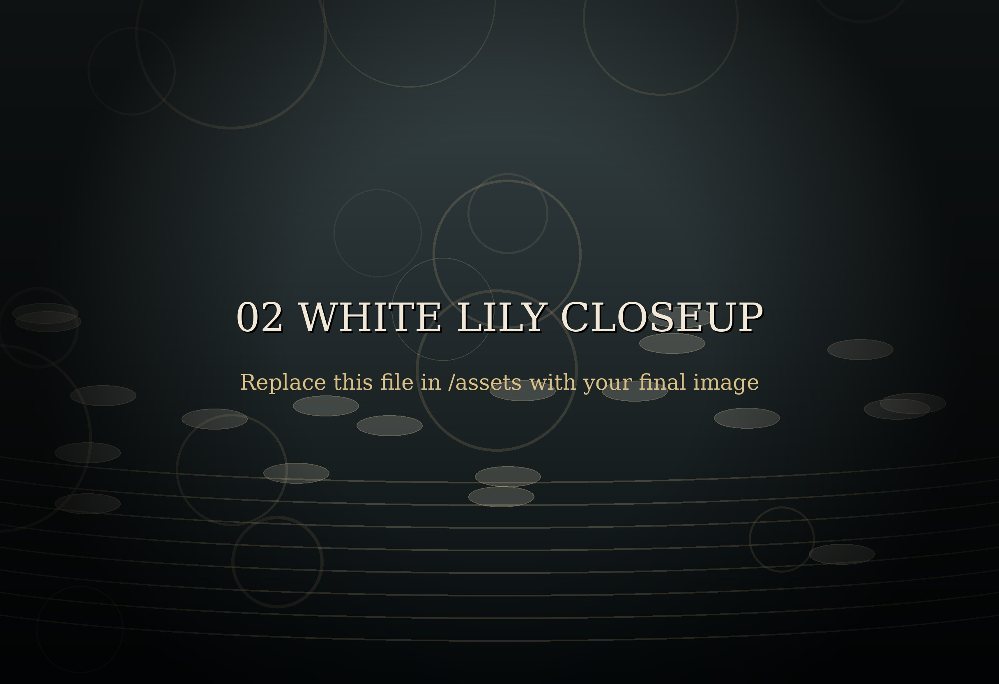
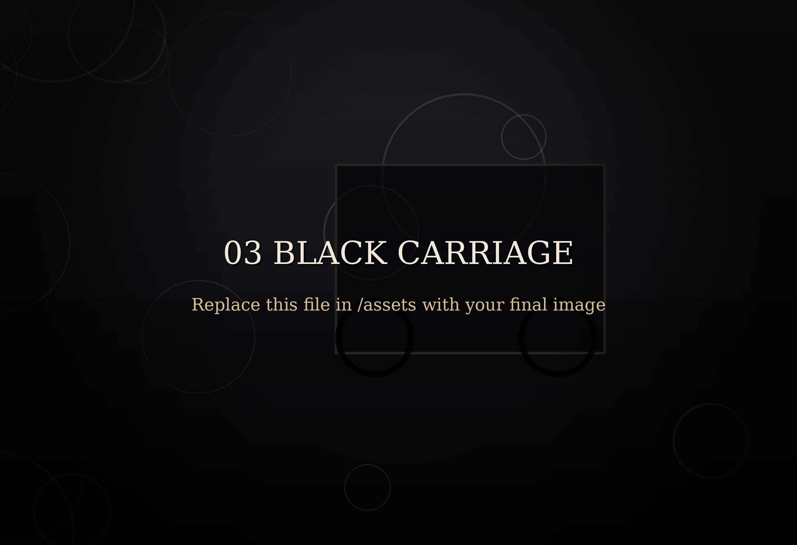
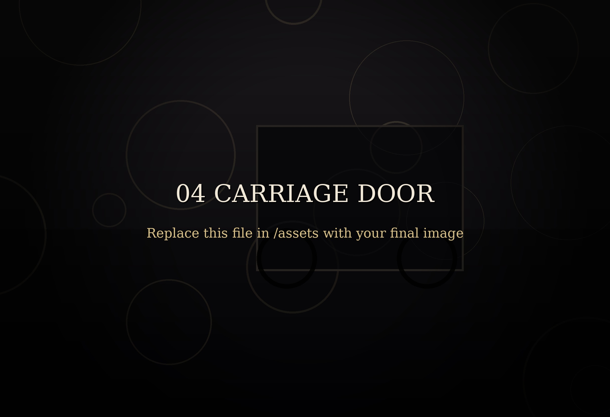
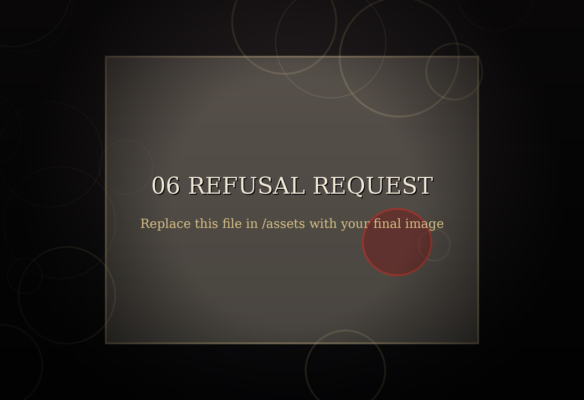
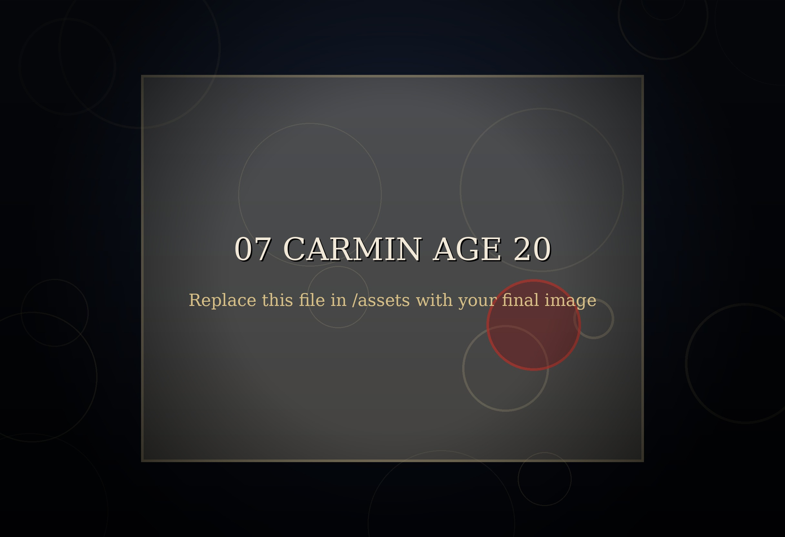
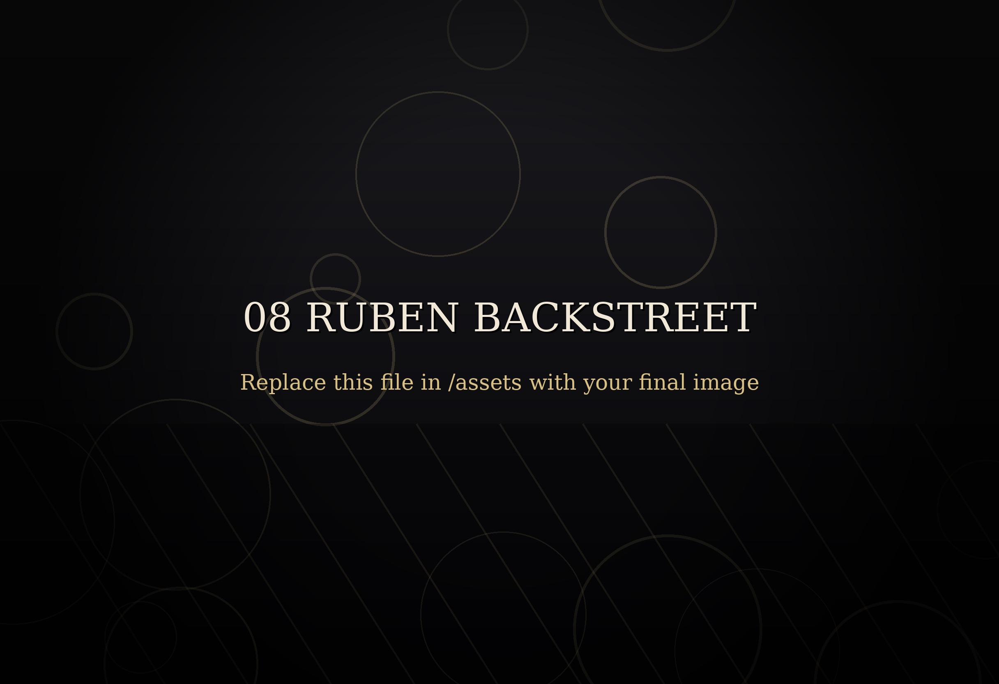
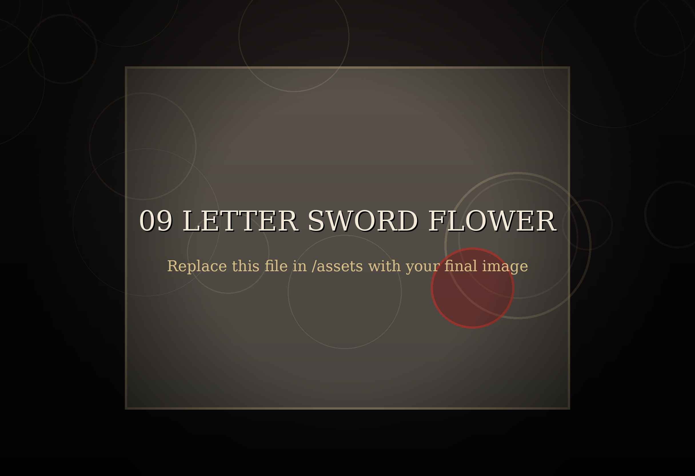
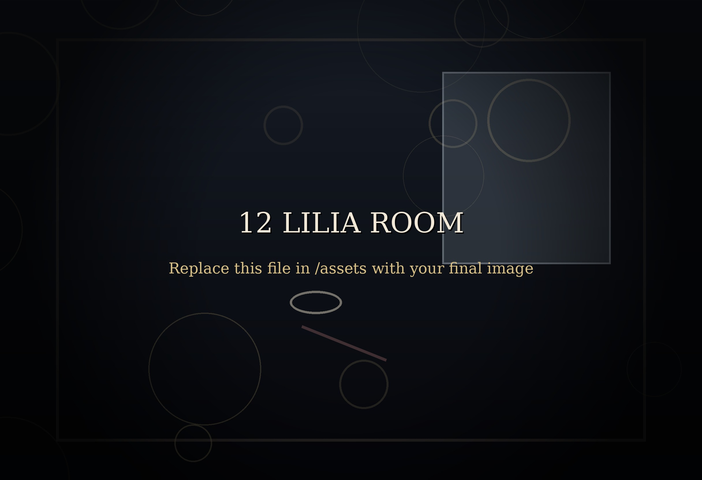

무릎 꿇은 나라에도,
봄은 있었다.
봄은 있었다.

세 아이는 알지 못했다.
그것이, 빌려온 봄이라는 걸.
그것이, 빌려온 봄이라는 걸.

그해,
봄은 검은 마차에 실려 떠났다.
봄은 검은 마차에 실려 떠났다.

막아선 아이는 짓밟혔고,
지켜본 아이는 무너졌다.
열 살의 두 아이는,
너무 작았다.
지켜본 아이는 무너졌다.
열 살의 두 아이는,
너무 작았다.
편지는 국경을 넘었다.
사람만이, 넘지 못했다.
사람만이, 넘지 못했다.

열일곱의 황제는
처음이자 마지막으로 고개를 숙였다.
돌아온 답은, 두 글자.
―不可―
그날 구겨진 것은
종이만이 아니었다.
처음이자 마지막으로 고개를 숙였다.
돌아온 답은, 두 글자.
―不可―
그날 구겨진 것은
종이만이 아니었다.

한 사람은 옥좌 위에서
무력한 얼굴을 쓰고, 칼을 숨겼다.
무력한 얼굴을 쓰고, 칼을 숨겼다.

한 사람은 진창 아래에서
이름을 버리고, 스스로 칼이 되었다.
이름을 버리고, 스스로 칼이 되었다.

방법은 달랐다.
맹세는, 같았다.
반드시, 데리러 간다.
맹세는, 같았다.
반드시, 데리러 간다.

릴리아의 편지는 언제나
같은 문장으로 끝났다.
나는 괜찮아. 정말이야.
같은 문장으로 끝났다.
나는 괜찮아. 정말이야.
webp 별도 업로드용 · PNG 렌더 제외
그 미소는,
보는 눈이 사라진 뒤에야
조용히 무너졌다.
보는 눈이 사라진 뒤에야
조용히 무너졌다.

페를라의 깃발이
성벽 너머로 보이던 그날,
그녀의 겨울은
끝내 봄이 되지 못했다.
성벽 너머로 보이던 그날,
그녀의 겨울은
끝내 봄이 되지 못했다.